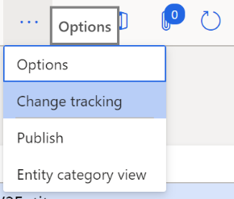
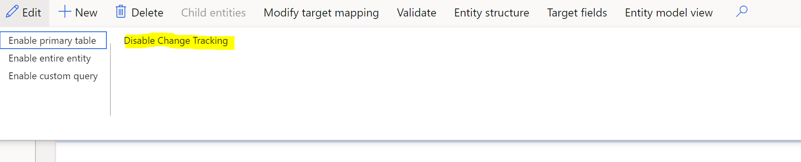
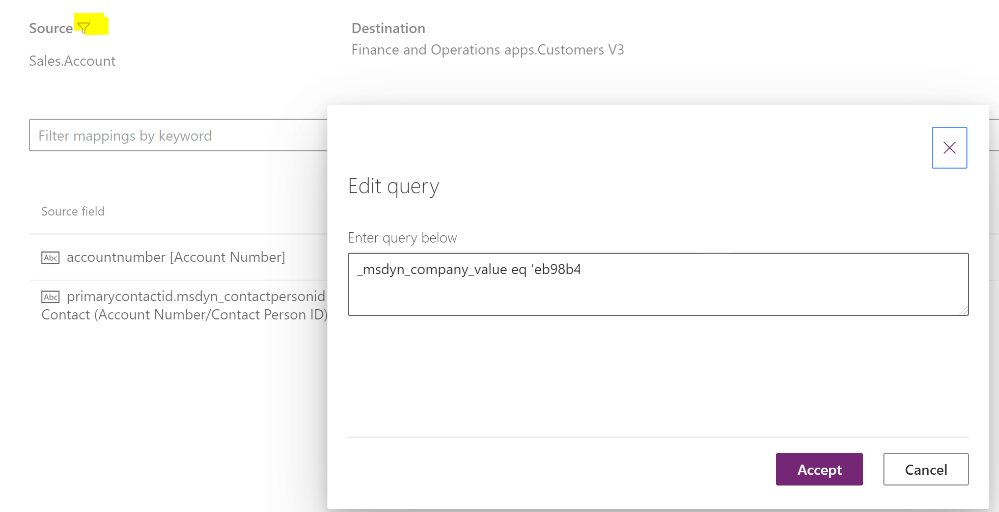

Troubleshoot issues during initial synchronization
[!include[rename-banner](~/includes/cc-data-platform-banner.md)]This topic provides troubleshooting information for dual-write integration between Finance and Operations apps and Dataverse. Specifically, it provides information that can help you fix issues that might occur during initial synchronization.
Important
Some of the issues that this topic addresses might require either the system admin role or Microsoft Azure Active Directory (Azure AD) tenant admin credentials. The section for each issue explains whether a specific role or credentials are required.
Check for initial synchronization errors in a Finance and Operations app
After you enable the mapping templates, the status of the maps should be Running. If the status is Not running, errors occurred during initial synchronization. To view the errors, select the Initial sync details tab on the Dual-write page.

You can't complete initial synchronization: 400 Bad Request
Required role to fix the issue: System admin
You might receive the following error message when you try to run the mapping and initial synchronization:
([Bad Request], The remote server returned an error: (400) Bad Request.), AX export encountered an error
Here is an example of the full error message.
Dual write Initial Sync completed with status: Error. Following are the details:
Executed leg: From AX Financial dimensions to CRM msdyn_dimensionattributes
with exported records count: 0, ImportRecordsErrorCount: 0,
ImportRecordsInsertedCount: 0 and ImportRecordsUpdatedCount: 0
ErrorsDetails:
Dual write Initial sync failed
Message: ([Bad Request], The remote server returned an error: (400) Bad Request.), AX export encountered an error
Stacktrace: at
Microsoft.Dynamics.Integrator.QueryGenerator.AxClient.\<ExportAxPackage\>d__16.MoveNext()
in X:\\bt\\1024532\\repo\\src\\Core\\QueryGenerator\\AxClient.cs:line 265
\--- End of stack trace from previous location where exception was thrown ---
at System.Runtime.ExceptionServices.ExceptionDispatchInfo.Throw()
at System.Runtime.CompilerServices.TaskAwaiter.HandleNonSuccessAndDebuggerNotification(Task task)
at Microsoft.D365.ServicePlatform.Context.ServiceContext.Activity.\<ExecuteAsync\>d__11\`2.MoveNext()
\--- End of stack trace from previous location where exception was thrown ---
If this error occurs consistently, and you can't complete the initial synchronization, follow these steps to fix the issue.
- Sign in to the virtual machine (VM) for the Finance and Operations app.
- Open Microsoft Management Console.
- In the Services pane, make sure that the Microsoft Dynamics 365 Data import export framework service is running. Restart it if it has been stopped, because the initial synchronization requires it.
Initial synchronization error: 403 Forbidden
You might receive the following error message during initial synchronization:
([Forbidden], The remote server returned an error: (403) Forbidden.), AX export encountered an error
To fix the issue, follow these steps.
- Sign in to the Finance and Operations app.
- On the Azure Active Directory applications page, delete the DtAppID client, and then add it again.

Self-reference or circular reference failures during initial synchronization
You might receive an error messages if any of your mappings have self-references or circular references. The errors fall into these categories:
- Errors in the Vendors V2–to–msdyn_vendors table mapping
- Errors in the Customers V3–to–Accounts table mapping
Resolve errors in the Vendors V2–to–msdyn_vendors table mapping
You might encounter initial synchronization errors for the mapping of Vendors V2 to msdyn_vendors if the tables have existing rows where there are values in the PrimaryContactPersonId and InvoiceVendorAccountNumber columns. These errors occur because InvoiceVendorAccountNumber is a self-referencing column, and PrimaryContactPersonId is a circular reference in the vendor mapping.
The error messages that you receive will have the following form.
Couldn't resolve the guid for the field: <field>. The lookup was not found: <value>. Try this URL(s) to check if the reference data exists: https://focdsdevtest2.crm.dynamics.com/api/data/v9.0/<entity>?$select=<field>&$filter=<field> eq <value>
Here are some examples:
- Couldn't resolve the guid for the field: msdyn_vendorprimarycontactperson.msdyn_contactpersonid. The lookup was not found: 000056. Try this URL(s) to check if the reference data exists:
https://focdsdevtest2.crm.dynamics.com/api/data/v9.0/contacts?$select=msdyn_contactpersonid.contactid&$filter=msdyn_contactpersonid eq '000056' - Couldn't resolve the guid for the field: msdyn_invoicevendoraccountnumber.msdyn_vendoraccountnumber. The lookup was not found: V24-1. Try this URL(s) to check if the reference data exists:
https://focdsdevtest2.crm.dynamics.com/api/data/v9.0/msdn_vendors?$select=msdyn_vendoraccountnumber,msdyn_vendorid&$filter=msdyn_vendoraccountnumber eq 'V24-1'
If any rows in the vendor table have values in the PrimaryContactPersonId and InvoiceVendorAccountNumber columns, follow these steps to complete the initial synchronization.
In the Finance and Operations app, delete the PrimaryContactPersonId and InvoiceVendorAccountNumber columns from the mapping, and then save the mapping.
On the dual-write mapping page for Vendors V2 (msdyn_vendors), on the Table mappings tab, in the left filter, select Finance and Operations apps.Vendors V2. In the right filter, select Sales.Vendor.
Search for primarycontactperson to find the PrimaryContactPersonId source column.
Select Actions, and then select Delete.

Repeat these steps to delete the InvoiceVendorAccountNumber column.

Save your changes to the mapping.
Turn off change tracking for the Vendors V2 table.
In the Data management workspace, select the Data tables tile.
Select the Vendors V2 table.
On the Action Pane, select Options, and then select Change tracking.

Select Disable Change Tracking.

Run initial synchronization for the Vendors V2 (msdyn_vendors) mapping. The initial synchronization should run successfully, without any errors.
Run initial synchronization for the CDS Contacts V2 (contacts) mapping. You must sync this mapping if you want to sync the primary contact column on the vendors table, because initial synchronization must also be done for the contact rows.
Add the PrimaryContactPersonId and InvoiceVendorAccountNumber columns back to the Vendors V2 (msdyn_vendors) mapping, and then save the mapping.
Run initial synchronization again for the Vendors V2 (msdyn_vendors) mapping. Because change tracking is turned off, all the rows will be synced.
Turn change tracking back on for the Vendors V2 table.
Resolve errors in the Customers V3–to–Accounts table mapping
You might encounter initial synchronization errors for the mapping of Customers V3 to Accounts if the tables have existing rows where there are values in the ContactPersonID and InvoiceAccount columns. These errors occur because InvoiceAccount is a self-referencing column, and ContactPersonID is a circular reference in the vendor mapping.
The error messages that you receive will have the following form.
Couldn't resolve the guid for the field: <field>. The lookup was not found: <value>. Try this URL(s) to check if the reference data exists: https://focdsdevtest2.crm.dynamics.com/api/data/v9.0/<entity>?$select=<field>&$filter=<field> eq <value>
Here are some examples:
- Couldn't resolve the guid for the field: primarycontactid.msdyn_contactpersonid. The lookup was not found: 000056. Try this URL(s) to check if the reference data exists:
https://focdsdevtest2.crm.dynamics.com/api/data/v9.0/contacts?$select=msdyn_contactpersonid.contactid&$filter=msdyn_contactpersonid eq '000056' - Couldn't resolve the guid for the field: msdyn_billingaccount.accountnumber. The lookup was not found: 1206-1. Try this URL(s) to check if the reference data exists:
https://focdsdevtest2.crm.dynamics.com/api/data/v9.0/accounts?$select=accountnumber.account&$filter=accountnumber eq '1206-1'
If any rows in the customer table have values in the ContactPersonID and InvoiceAccount columns, follow these steps to complete the initial synchronization. You can use this approach for any out-of-box tables, such Accounts and Contacts.
In the Finance and Operations app, delete the ContactPersonID and InvoiceAccount columns from the Customers V3 (accounts) mapping, and then save the mapping.
On the dual-write mapping page for Customers V3 (accounts), on the Table mappings tab, in the left filter, select Finance and Operations app.Customers V3. In the right filter, select Dataverse.Account.
Search for contactperson to find the ContactPersonID source column.
Select Actions, and then select Delete.

Repeat these steps to delete the InvoiceAccount column.

Save your changes to the mapping.
Turn off change tracking for the Customers V3 table.
In the Data management workspace, select the Data tables tile.
Select the Customers V3 table.
On the Action Pane, select Options, and then select Change tracking.
Select Disable Change Tracking.
Run initial synchronization for the Customers V3 (Accounts) mapping. The initial synchronization should run successfully, without any errors.
Run initial synchronization for the CDS Contacts V2 (contacts) mapping.
Note
There are two maps that have the same name. Be sure to select the map that has the following description on the Details tab: Dual-write template for sync between FO.CDS Vendor Contacts V2 to CDS.Contacts. Requires new package [Dynamics365SupplyChainExtended].
Add the InvoiceAccount and ContactPersonId columns back to the Customers V3 (Accounts) mapping, and then save the mapping. Both the InvoiceAccount column and the ContactPersonId column are now part of live synchronization mode again. In the next step, you will do the initial synchronization for these columns.
Run initial synchronization again for the Customers V3 (Accounts) mapping. Because change tracking is turned off, the data for InvoiceAccount and ContactPersonId will be synced from the Finance and Operations app to Dataverse.
To sync the data for InvoiceAccount and ContactPersonId from Dataverse to the Finance and Operations app, you must use a data integration project.
In Power Apps, create a data integration project between the Sales.Account and Finance and Operations apps.Customers V3 tables. The data direction must be from Dataverse to the Finance and Operations app. Because InvoiceAccount is a new attribute in dual-write, you might want to skip initial synchronization for it. For more information, see Integrate data into Dataverse.
The following illustration shows a project that updates CustomerAccount and ContactPersonId.

Add the company criteria in the filter on the Dataverse side, so that only rows that match the filter criteria will be updated in the Finance and Operations app. To add a filter, select the filter button. Then, in the Edit query dialog box, you can add a filter query such as _msdyn_company_value eq '<guid>'.
[NOTE] If the filter button isn't present, create a support ticket to ask the data integration team to enable the filter capability on your tenant.
If you don't enter a filter query for _msdyn_company_value, all the rows will be synced.

The initial synchronization of the rows is now completed.
In the Finance and Operations app, turn change tracking back on for the Customers V3 table.